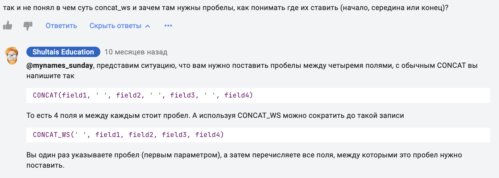
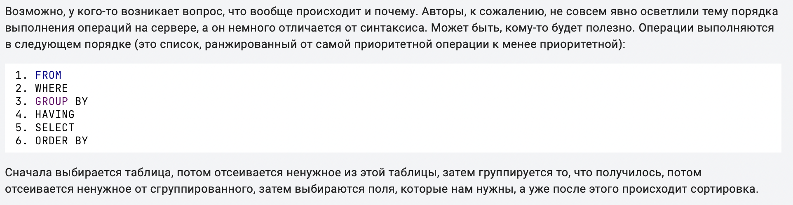
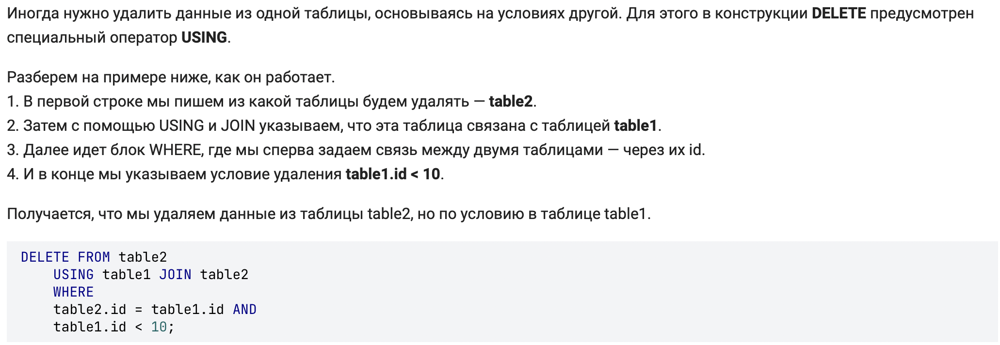
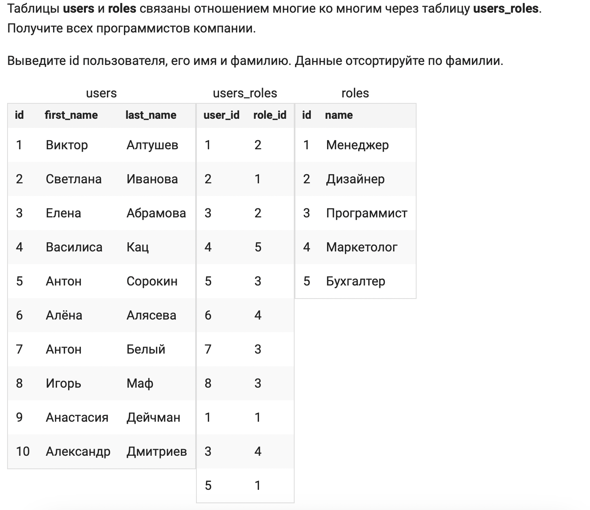
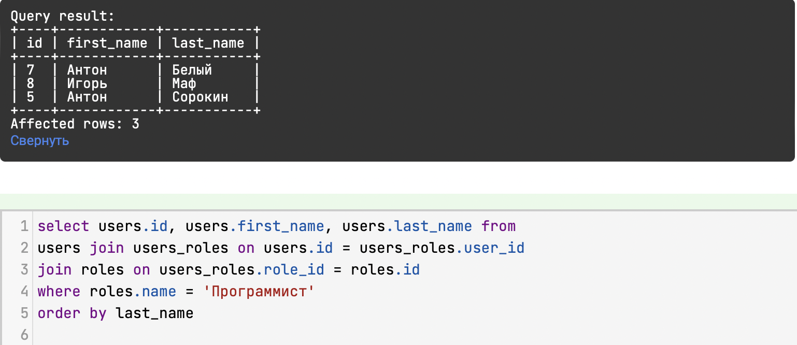
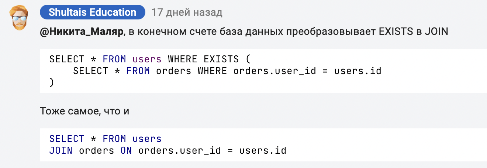

Быстрые ссылки
Основная часть
SQL - это язык общения с базой данных
Результатом работы SQL запроса является таблица
select * from tables- получить всю информацию из таблицы.
select name, price from products - получить только колонки name, price.
select * from products where price < 3000 - выбрали все данные, где цена товара меньше 3000.
select * from products where age >= 18 and price > 100 - несколько условий
select * from products where age >= 18 or price > 100 - несколько условий
select * from products where country in ('RU', 'US') - несколько условий
select * from products where price BETWEEN (между) 10 000 and 20000 - несколько условий
Select * from tables where (basic_lang='python' or basic_lang='php') and level='middle'
... ORDER BY last_name, first_name - сортировка по фамилии, а затем по
имени
... ORDER BY last_name DESC - сортировка по фамилии в
обратном порядке
... LIMIT 5 - берем только первые 5 записей
... LIMIT 5 OFFSET 5 - пропускается первая 5 самых дорогих товраов, а после берем 5первых
товаров
- select * from products
- where count > 0
- order by price desc
- limit 2 offset 4
Принцип работы базы данных
Это обобщающий принцип.
Добавление данных
Дальнейшая работа будет проводиться в программе Sequel Ace
INSERT INTO users (id, first_name) VALUES (6, 'Дмитрий') - вставить в таблицу users данные по названию столбцов
Новые записи в таблицу можно добавить не только с помощью VALUES, но и с помощью SET.
Следующие два запроса идентичны:
Записи в таблицу можно добавлять не по одной, а сразу по несколько (в пакетном режиме).
Для этого нужно вставить несколько блоков значений, разделенных запятыми.
Следующий запрос добавит сразу три записи:
VALUES
(value1_1, value1_2),
(value2_1, value2_2),
(value3_1, value3_2);
Обновление данных
UPDATE products SET name = 'snikers' WHERE name = 'sinckers' - обновить данное NAME в таблице products когда NAME = 'sinckers'
Удаление данных
DELETE FROM users WHERE last_visit_date IS NULL - удаляем данные из users если last_visit_date = null
Создание таблиц
CREATE TABLE users2 (id INR, first_name VARCHAR(20), last_name VARCHAR(50)) - создаем таблицу users2 c 3 колонками, с типами данных, (число и 2 типа строкового типа длиной до 20 и до 50 символов)
id INT,
first_name VARCHAR(20),
last_name VARCHAR(50),
birthday DATE,
age TINYINT,
active BOOL
)
Числовые поля
... id INT UNSIGNED - теперь будут только положительные
числа
... amount DECIMAL(10,2) - число будет иметь 10 знаков, 2 из которых отведены под дробную часть
| # | Тип | Объем памяти | Диапазон |
|---|---|---|---|
| TINYINT | 1 байт | от -128 до 127 (от -27 до 27-1) от 0 до 255 (от 0 до 28-1) |
|
| SMALLINT | 2 байта | от -32768 до 32767 (от -215 до 215-1) от 0 до 65535 (от 0 до 216-1) |
|
| MEDIUMINT | 3 байта | от -223 до 223-1 от 0 до 224-1 |
|
| INT INTEGER (синонимы) |
4 байта | от -231 до 231-1 от 0 до 232-1 |
|
| BIGINT | 8 байта | от -263 до 263-1 от 0 до 264-1 |
|
| DEC[(M,D)] DECIMAL[(M,D)] (синонимы) |
Зависит от параметров M и D | ||
| FLOAT[(M, D)] | 4 байта | Минимальное значение ±1.17·10-39 Максимальное значение ±3.4·1038 |
Строковые поля
| # | Тип | Диапазон Символов |
|---|---|---|
| TEXT | Максимальная длина 65,535 | |
| TINYTEXT | Максимальная длина 255 | |
| MEDIUMTEXT | Максимальная длина 16,777,215 | |
| LONGTEXT | Максимальная длина 4,294,967,295 | |
| VARCHAR(X) | Длина может быть любой в диапазоне от 0 до 65,535 |
Почему в bio (биография, текст до 65000 символов) используется TEXT, а не VARCHAR(65000)
Это популярный вопрос, который мы в уроках не освещаем.
Итак, для хранения текста до 65000 знаков можно использовать и VARCHAR(65000), и TEXT,
который может содержать строки до 65535 знаков.
1. Для больших текстов (более 255-500 символов) принято использовать именно TEXT, а не
VARCHAR.
2. VARCHAR обычно используют для небольших текстов (фамилии, имена, названия), заметок
(мини комментарии) или каких-то параметров (статус, цвет и тд).
Это связано с особенностью хранения данных. VARCHAR-данные хранятся прямо в таблице и
доступ к ним быстрее. Если нужно получить список товаров с их кратким описанием
(например на странице сайта со списком товаров), то логично, чтобы доступ был быстрым.
Данные типа TEXT хранятся в отдельных файлах. Доступ к ним медленней, поэтому их используют для информации, которая нужна реже. Например, пользователи 90% ищут товары и 10% смотрят их подробно (на отдельной странице). Как раз при подробном рассмотрении выводятся большие тексты и их можно хранить в TEXT.
Получается, что 1000 и не туда и не сюда. Но так как есть четкое ограничение, то лучше взять VARCHAR, так как для TEXT в принципе нельзя задать ограничитель.
Дата и время
... DATETIME - '2017-03-13 12:20:05' - пример заполнения типа datetime
... DATETIME(3) - до милисекунд (6) - до микросекунд
... TIME(3 or 6) - только для времени
... DATE - только для даты
Null
... id INT UNSIGNED NOT NULL - т.е столбец ID не может принимать NULL (но может принимать '' -
пустая строка, ведь это то-же значение),
обязательны для заполнения
... birthday varchar(10) NULL - может не примнимать данных
IFNULL(значение, альтернативное_значение);
Функция IFNULL возвращает значение, переданное первым аргументом, если оно не равно NULL, иначе возвращает альтернативное_значение.
Bool, Enum, Set
... state ENUM ('new', 'confired') - тип данных с предопределенными значениями строкого типа
... state SET('tv','wifi','bar') - может хранить несколько значений (через запятую)
where (FIND_IN_SET('RU', country) OR FIND_IN_SET('BY', country)) - для поиска в SET
Значения по умолчанию
DROP TABLE users - удалить таблицу users
name varchar(20) not null DEFAULT '' - если не вставлять
значение никакое, то по умолчанию будет пустая строка
create_date DATETIME not null DEFAULT CURRENT_TIMESTAMP - по
умолчанию дату и время текущего sql запроса
Индексы
Уникальный ключ
create table products (id int not null PRIMARY KEY ) - столбик
id является первичным ключом, т.е можно указывать только уникальные
значения
create table products (id int not null PRIMARY KEY AUTO_INCREMENT
) - база данных будет самма увеличивать id на 1
CREATE TABLE passports(
series VARCHAR(4) NOT NULL,
number VARCHAR(6) NOT NULL,
PRIMARY KEY(series, number) );
- создаем первичный ключ по 2 полям !
Уникальный индекс
... passport varchar(20) not null,
UNIQUE KEY
passport(passport) - теперь в этой
колонке можно вставлять только уникальные значения (не дублировались)
... series varchar(5) not null,
number varchar (6) not null,
UNIQUE passport (series, number) -
проверяет уникальность сразу же по двум полям ВМЕСТЕ (составной по 2 полям)
Обычные индексы
CREATE INDEX marks_index ON cars(mark) - создаем индекс с именем marks_index по колонке mark в таблице cars
Добавление и удаление индексов
CREATE UNIQUE INDEX email on users(email) - создаем уникальный индекс для колонки email
DROP INDEX email ON users - удаляем индекс с названием email в таблице users
Изменение таблиц
Добавление и удаление столбцов
ALTER TABLE users ADD COLUMN birthday date null default null - Добавление
столбца birthday с праметрами ... (default лучше поставить !)
ALTER TABLE users DROP COLUMN birthday - изменяем таблицу users удаляя столбец birthday
Если несколько запросов, то в скобочках, через запятую
ALTER TABLE films ADD COLUMN rating FLOAT NOT NULL DEFAULT 0;
UPDATE films SET rating = (kinopoisk + imdb) / 2;
Изменение столбцов
ALTER TABLE users MODIFY first_name VARCHAR (50) - изменение типа столбца
(нужно указывать полное описание столбца ! )
ALTER TABLE users CHANGE nname name VARCHAR (50) - пишем 2 имени, имя текущего столбца
и новое имя для этого столбца, а в конце указываем структуру
Изменение таблицы
RENAME TABLE product TO products - переименовали таблицу
RENAME TABLE product TO products, log to logs - переименовали 2 таблицы
Поиск текста
С помощью Like
select * from users where first_name LIKE 'Наталья' - обычное =
select * from users where first_name LIKE BINARY 'Наталья' - поиск с учетом регистра
select * from users where first_name LIKE 'Н%'- поиск где перва буква Н и набор симоволв
select * from users where first_name LIKE 'Н_'- поиск где перва буква Н и ровно 1 символ ! ( _ один символ)
Обратный слеш так-же работает. % И _ можно ставить как для начала, так и для коцна искомого слова
Полнотекстовый поиск
CREATE FULLTEXT INDEX idx_name on products(name) - создаем полнотекстовый индекс с
именем idx_name для колонки name в таблице products (собрали словарь по колонке, с указанием, в каких местах эти слова встречаются)

... price INTEGER UNSIGNED NOT NULL DEFAULT 0,
FULLTEXT INDEX name(name); - пример при создании таблицыу
SELECT * from products WHERE MATCH(name) AGAINST ('микроволновая печь') - name (стобцы по которым будем искать, и слова, которые нужно найти в поле name), (ищет не фразу, а слова по отдельности, и сортирует)
SELECT * from products WHERE MATCH(name) AGAINST ('микроволновая печь' IN BOOLEAN MODE ) - вкл.
операторов для лучшего поиска.
... '+микроволновая печь' - т.е слово микроволновая должна быть обязательно
... '-микроволновая печь' - т.е слово микроволновая не должно быть
... '~микроволновая печь' - понижаем ревелантность слова
CREATE FULLTEXT INDEX search ON products(name, description); - создание по нескольким столбцам ( Так как индекс создается по нескольким столбцам, то при поиске в конструкции MATCH надо перечислить их все )
В логическом режиме в конце слов вместо окончаний можно добавлять звездочку, тогда поиск будет учитывать все варианты написания.
Несколько примеров:
«товар*» будет равносилен словам «товар», «товары», «товарами» и тд.
«игр*» будет равносилен словам «игра», «игры», «игрой» и тд.
Но иногда нужно найти фразу целиком, например если это название книги или вы точно знаете что ищете.
Для это достаточно заключить фразу в двойные кавычки:
SELECT * FROM films
WHERE MATCH(name) AGAINST ('"Кремниевая долина"' IN BOOLEAN MODE);
Вспомогательные функции
Математические функции
ROUND (rating) - округление (в скобках можно указать цифру, сколько цифр после запятой нужно оставить)
ROUND (rating) as rating - позволяет переименовать поле при выводе (конструкция as)
.Если после as дать другое название, то получится новая колонка
Пример: select id,comments, ceiling((comments / 10)) as pages from posts - создает при Выводе новую колонку pages
TRUNCATE (rating) - усекает чсило (в скобках можно указать цифру, сколько цифр после запятой)
FLOOR (rating) - возвращает нижнее целое значение
CEILING (rating) - возвращает верхнее целое значение
При выводе данных !!! Для Обновления нужна конструкция UPDATE
Cтроковые функции
SELECT id, first_name, LENGTH(first_name) from users - возвращает длину строки в байтах (1 символ = 2 байта)
SELECT id, first_name, CHAR_LENGTH(first_name) from users - возвращает реальную длину строки
SELECT id, first_name, CONCAT (last_name,' ', LEFT(first_name, 1), '.') as fi from users -
склеиваем строки, LEFT - берем 1-ый символ со строки first_name

UPPER () - в верхний регистр
TRIM () - убирает пробелы справа и слева
LPAD(series, 4, '0') и RPAD(number, 6, '0') - заполняет слева нулями до длины 4 (и справа до длины 6 соответственно)
Функции даты
SELECT *, YEAR(birthday) as year FROM users - извлекает год из переданой даты
SELECT *, MONTH(birthday) as month FROM users - извлекает месяц из переданой даты
SELECT *, DAY(birthday) as day FROM users - извлекает день из переданой даты
MONTH(NOW()) - возвращает сегоднешний месяц
SELECT * FROM users WHERE date_joined > NOW() - INTERVAL 7 DAY - указываем, что дата регистрации
должна быть больше чем текущее время - 7 дней
INTERVAL позволяет прибавлять или уменьшат дату
SELECT * , DATE_FORMAT (date_joined, '%d.%m.%Y %H:%i') - форматируем дату в удобный для нас формат
получаем все даты для 22 июня с 12 до 12/59
Пример 2 : update calendar set visit_date = visit_date + interval 90 minute where date(visit_date) = '2017-05-14' and time(visit_date) >= '13:00:00' -
перенесли на 1,5 часа вперед все записи после 13 часов дня (включительно) за 14 мая 2017 года.
Сортировка по дате
SELECT id, DATE_FORMAT(date, '%d.%m.%Y') as date FROM transactions ORDER BY transactions.date -
сообщаем sql, что сортировать по date из исходной таблицы.
Потому что DATE_FORMAT отдает нам строку !!! А не дату
Группировка данных
Count, Min, Max, AVG
SELECT MIN(price),MAX(price),AVG(price),
COUNT(*) from products - получаем мин, макс, среднее значени по колонке price и кол-во найденных записей
COUNT(stock) - не считае null
Функции агрегации
Функции агрегации (рус)
GROUP BY
SELECT category_id FROM products GROUP BY category id - получаем все категории, содержащиеся в таблице
Важно, что бы группируемые колонки были в select запросе
В select запрос можно вставить функции агрегации
SELECT sex, COUNT(sex) as members FROM users GROUP BY sex - группируем по полу, и получаем кол-во мужчин и женщин

HAVING и WHERE
Иногда нам нужно подсчитать данные уже после группировки, тогда на помощь приходит конструкция HAVING
SELECT category_id, COUNT(*) as cnt FROM products WHERE count > 0 GROUP BY category_id HAVING cnt > 2;

Команда WHERE используется для фильтрации записей из таблицы или при объединении более одной таблицы. Она извлекает только те записи, которые удовлетворяют указанному условию в команде WHERE. WHERE может использоваться с операторами SELECT, UPDATE и DELETE
HAVING
Команда HAVING, с другой стороны, используется для фильтрации записей из групп, основанных на заданном условии в команде HAVING. Те группы, которые удовлетворяют заданному условию, появятся в окончательном результате. HAVING может использоваться только с оператором SELECT и обычно используется совместно с GROUP BY для фильтрации группированных данных.
- WHERE используется до операции агрегации, а HAVING - после.
- WHERE используется для фильтрации строк, а HAVING - для фильтрации агрегированных данных.
- WHERE не может использовать псевдонимы столбцов или агрегатные функции, в то время как HAVING может.
- WHERE применяется перед группировкой, а HAVING - после группировки. Это означает, что WHERE фильтрует данные до операции GROUP BY, а HAVING фильтрует результаты после операции GROUP BY.
- WHERE применяется к каждой отдельной строке, а HAVING к группам строк.
- Оба оператора могут использоваться вместе в одном запросе. В таком случае WHERE применяется первым, затем результаты группируются с помощью GROUP BY, и, наконец, группы фильтруются по условиям HAVING.
Многотабличные запросы
Объединение с помощью UNION
SELECT * FROM logs_2016 UNION SELECT * FROM logs_2017 UNION
SELECT * FROM logs_2018 - получаем общую таблицу данных за 3 года
Должно быть одинаковое кол-во колонок в таблицах + одинаковый тип данных
Название колонок берется из 1-ой таблицы
Поддерживается WHERE r каждому select запросу
union
select date_format(date,'%d.%m.%y') as date,amount,'cash' as payment_type from cashbox_transactions where client_id = 56
Объединение с помощью UNION: сортировка
Нужно при объединение заключить оба SELECT запроса в скобки. Если хотим сортировать до объединения, сортируем внутри скобок
, используя LIMIT. Если нужна сортировка общей таблицы, то прописываем после скобок
(select ...) UNION (select ...) ORDER BY ...
Объединение с помощью UNION: группировка
select * from(select .. from ... union select ... from ...) new_name - получаем обычный select запрос (промежуточную таблицу new_name), который можно группировать
Отношение один к одному
(отношение между таблицами), т.е данные для одного и того-же объекта хранятся в разных таблицах
SELECT * from users, users_data WHERE user.id = users_data.id - берем все данные из 2-х таблиц по пользователям. При помощи WHERE указываем,
как эти таблицы связаны (первичные ключи ?, по каким колонкам можно определить, что это относится к одному и тому-же пользователю)
Запросы из разных таблиц нужно указывать через точку (users.name)
Вообще сортировать можно по любой из 2-ух таблиц(where,order и т.д.), главное указать, какой колонкой они связаны (1 к 1)
UPDATE users as u, users_data as ud SET u.last_name = 'Abramova', ud.bio = 'What fuck ?' WHERE u.id = 3 and u.id = ud.id - обновление данных. Главное указать, для какого id пользователя делаются изменения
Внешний ключ
CREATE TABLE users_date
(id int UNSIGNED not null PRIMARY KEY AUTO_INCREMENT,
FOREIGN KEY (id) REFERENCES users(id) - указываем колонку (id) которую будем связывать (связываем с колокной id из табл. users)
ON DELETE CASCADE - удаление в основной таблице повлечет за собой удаление в ссылающийся
ON UPDATE CASCADE - обновление id (ключа) в основной таблице повлияет на изменение в этой таблице
Сперва нужно записывать данные в таблицу users.
Удаление данных из users_date не влечет за собой удаление из основной таблицы (users) - т.е. связь одностороняя.
При добавлении данных может произойти сбой в нумерации id, тогда поможет функция LAST_INSERT_ID()
INSERT INTO users_data (id, bio)
VALUES (LAST_INSERT_ID(), 'Биография Илюхи')
- Явно указываем колонку id, хоть она и задана как автоматическая (либо можем явно указать номер id ☃)
Отношения один-ко-многим
Основное отличие - на 1 запись в одной таблице может приходиться несколько записей в другой.
Так-же нужно указывать и несколько условий WHERE (связей), если таблиц несколько
SELECT orders.* (получаем все данные из таблицы orders)
Главное указать связь !
Создание связей один-ко-многим
Значение связанных полей (id например) нужно указывать напрямую
При создании связи можно указать ON DELETE SET NULL - при удалени запись не удалиться, а проставиться NULL
ALTER TABLE artists ADD COLUMN genre_id INT UNSIGNED NULL;
ALTER TABLE artists ADD FOREIGN KEY (genre_id) REFERENCES genres (id) ON DELETE SET NULL
- Создаем в таблице artists новое поле genre_id и сделайте его внешним ключом на поле id в таблице genres.
ALTER TABLE products
ADD FOREIGN KEY (category_id) REFERENCES categories (id)
- Добавление связи в существующую таблицу
JOIN
Удобнее и читабельнее использавать конструкцию JOIN для обозначения связей между таблицами
SELECT * FROM posts as p JOIN users as u ON
u.id = p.user_id - а уже затем можно прописывать условия, таким образом чтение становится более удобным
JOIN users as u ON u.id = c.user_id
JOIN posts as p ON p.id = c.post_id
- указываем несколько связей
SELECT
p.id,
p.name,
p.price,
cats.name as category
FROM
products as p
JOIN
categories as cats ON p.category_id = cats.id
WHERE
cats.parent_id IS NULL
Понимание JOIN
- JOIN – левая_таблица JOIN правая_таблица ON условия_соединения
- LEFT JOIN – левая_таблица LEFT JOIN правая_таблица ON условия_соединения
- RIGHT JOIN – левая_таблица RIGHT JOIN правая_таблица ON условия_соединения
- FULL JOIN – левая_таблица FULL JOIN правая_таблица ON условия_соединения
- CROSS JOIN – левая_таблица CROSS JOIN правая_таблица
Краткий синтаксис (Полный синтаксис) - Описание
- JOIN (INNER JOIN)
Из строк левой_таблицы и правой_таблицы объединяются и возвращаются только те строки, по которым выполняются условия_соединения. - LEFT JOIN - (LEFT OUTER JOIN)
Возвращаются все строки левой_таблицы (ключевое слово LEFT). Данными правой_таблицы дополняются только те строки левой_таблицы, для которых выполняются условия_соединения. Для недостающих данных вместо строк правой_таблицы вставляются NULL-значения. - RIGHT JOIN (RIGHT OUTER JOIN)
Возвращаются все строки правой_таблицы (ключевое слово RIGHT). Данными левой_таблицы дополняются только те строки правой_таблицы, для которых выполняются условия_соединения. Для недостающих данных вместо строк левой_таблицы вставляются NULL-значения. - FULL JOIN (FULL OUTER JOIN)
Возвращаются все строки левой_таблицы и правой_таблицы. Если для строк левой_таблицы и правой_таблицы выполняются условия_соединения, то они объединяются в одну строку. Для строк, для которых не выполняются условия_соединения, NULL-значения вставляются на место левой_таблицы, либо на место правой_таблицы, в зависимости от того данных какой таблицы в строке не имеется. - CROSS JOIN
Объединение каждой строки левой_таблицы со всеми строками правой_таблицы. Этот вид соединения иногда называют декартовым произведением.
Выборка из трех и более таблиц
Если у нас в запросе несколько JOIN, то каждый последующий JOIN присоединяется к самой первой таблице, которая была указана в блоке FROM?
Следующую таблицу можно подцепить к любой таблице, которая была объявлена выше. Это делается в блоке ON
SELECT *
FROM base
JOIN second ON second.filed_id = base.id -- вторая таблица цепляется к основной
JOIN third ON third.field_id = second.id -- третья таблица цеплятеся ко второй
JOIN forth ON forth.field_id = base.id -- четвертая таблица цеплятеся к первой
Ссылочная целостность
ALTER TABLE comments DROP FOREIGN KEY comments_ibfk_2 - удаляем внешний ключ (связь)
ALTER TABLE comments ADD FOREIGN KEY (post_id) REFERENCES posts(id) ON DELETE RESTRICT - добавляем связь, не даем удалить записи, на которые есть сслыки
Если мы действительно хотим удалить пост, то нужно сначала удалить все коментраии, которые на него ссылаются
в случае с RESTRICT сперва нужно удалить дочерние данные (которые ссылаются на что-то), а уже потом основные (те, на которые ссылаются)
Отношение многие ко многим
Для отношения многие ко многим СОЗДАЕТСЯ дополнительная таблица, в которой хранятся внешние ключи к 2 таблицам (или больше)
Очень полезная статья по связям  Вложенные Запросы
Подзапрос SQL - это запрос, который включается в другой запрос. Подзапросы позволяют использовать результат выполнения внутреннего запроса во внешнем запросе, что позволяет строить сложные запросы из более простых.
Читаются изнутри наружу
Пример подзапроса, который выводит все продукты, цена которых выше средней по всем продуктам:
FROM Products
WHERE Price > (
Пример подзапроса, который выводит все продукты, которые есть в таблице с чеками: (таблицы свзаны)
FROM Products
WHERE Product_id IN
(
Нужно следить за условиями вложенных запросов, они не вытягиваются друг за другом !!!
Получите из таблицы products джинсы, стоимость которых больше средней цены за джинсы. Выведите id, название и цену. Данные отсортируйте по цене, а затем по id.
ORDER BY price, id
IN, ANY, ALL
SELECT DISTINCT ... - говорим базе, что нужно извлекать только уникальные значения
- Операторы ANY и ALL используются с предложением WHERE или HAVING.
- Оператор ANY возвращает true, если какое-либо из значений подзапроса удовлетворяет условию.
- Оператор ALL возвращает true, если все значения подзапроса удовлетворяют условию.
| ALL | ANY |
|---|---|
| x > ALL (1, 2) эквивалентно x > 2 | x > ANY (1, 2) эквивалентно x > 1 |
| x < ALL (1, 2) эквивалентно x < 1 | x < ANY (1, 2) эквивалентно x < 2 |
| x = ALL (1, 2) эквивалентно (x = 1) AND (x = 2) | x = ANY (1, 2) эквивалентно x IN (1, 2) |
| x <> ALL (1, 2) эквивалентно x NOT IN (1, 2) | x <> ANY (1, 2) эквивалентно (x <> 1) OR (x <> 2) |
Как правило сложности возникают в операциях сравнения с ALL и ANY.
Например, цена товара А, больше чем ALL из списка товаров (B, C, D). Это значит, что A должна быть больше B, больше C, больше D. Больше чем все товары. Аналогом будет выступа MAX. Если A больше MAX(B, C, D), то A будте больше, чем все товары.
Теперь ANY. Цена товара A, больше чем ANY из списка товаров (B, C, D). Это значит, что достаточно, чтобы цена была больше ЛЮБОГО из товаров. Если она больше B, но меньше C и D, то нас это устраивает. Аналог MIN. Если цена больше минимального, то как минимум одно условие выполняется.
Ключевое слово EXISTS
Принцип работы
- Внешним запросом SELECT * FROM users - берем поочередно строки, в отдельно взятой строке уже есть такие данные как id, name, ... нас интересует id (users.id - так он будет записан во внутреннем запросе)
- Для взятой строки из пункта 1, уже во внутреннем запросе проверяем условие (orders.user_id = users.id)
- Если во внутреннем запросе условия удовлетворяются, то запрос выводит строку взятую в пункте 1. Если нет то данная строка не выводится запросом.
Примечание
Операторы SQL, использующие условие EXISTS, очень неэффективны, поскольку подзапрос повторно запускается для КАЖДОЙ строки в таблице внешнего запроса. Есть более эффективные способы написания большинства запросов, которые не используют условие EXISTS.

Для тех кто не понял магию EXISTS, запомните его как 2 цикл for:
for user in users:
for order in orders:
if order.user_id == user:
Запросы, возвращающие несколько столбцов
SELECT * FROM cars WHERE (mark_id, model_id) =
(SELECT mark, model FROM test_drive ) - главное соблюдать порядок колонок, и тип данных !
Подзапросы в конструкции FROM
SELECT * FROM cars JOIN (SELECT mark, model FROM test_drives WHERE date='2018-06-24') as td ON td.model = cars.model_id AND td.mark = cars.mark_d - без коментариев. Не забыть указать связь
SELECT * FROM (SELECT * FROM cars ORDER BY price DESC LIMIT 5) as best_cars ORDER BY price - правильная сортирока (отсортировали виртуальную таблицу, что бы не перегружать систему)
select * from (
(select id, name, rating, 'Action' as genre from games where category_id = 1)
UNION
(select id, name, rating, 'RPG' as genre from games where category_id = 2)
UNION
(select id, name, rating, 'Adventure' as genre from games where category_id = 3)
UNION
(select id, name, rating, 'Strategy' as genre from games where category_id = 4)
UNION
(select id, name, rating, 'Shooter' as genre from games where category_id = 5)
) as game
При объединении при помощи UNION не надо давать название таблицам !!!
Вот пример еще страшнее !!!
select * from
(select * from
(select * from
(
(select id, name, rating, 'Action' as genre from games where category_id = 1 order by rating desc LIMIT 2)
UNION
(select id, name, rating, 'RPG' as genre from games where category_id = 2 order by rating desc LIMIT 2)
UNION
(select id, name, rating, 'Adventure' as genre from games where category_id = 3 order by rating desc LIMIT 2)
UNION
(select id, name, rating, 'Strategy' as genre from games where category_id = 4 order by rating desc LIMIT 2)
UNION
(select id, name, rating, 'Shooter' as genre from games where category_id = 5 order by rating desc LIMIT 2)
)
as game ORDER by rating DESC)
as game_1 limit 5 )
as game_2 order By rating,id
Подзапросы в конструкции INSERT
INSERT INTO paypal_payments (SELECT id, user_id, date, amount FROM payments WHERE source = 'paypal') - вставляем все записи из таблицы payments
INSERT IGNORE INTO paypal_payments (SELECT id, user_id, date, amount FROM payments WHERE source = 'paypal') - То есть если строка приводит к ошибке, то MySQL эту строку пропускает и переходит к следующей.
REPLACE INTO paypal_payments (SELECT id, user_id, date, amount FROM payments WHERE source = 'paypal') - перезаписываем данные (если где то произошли изименения)